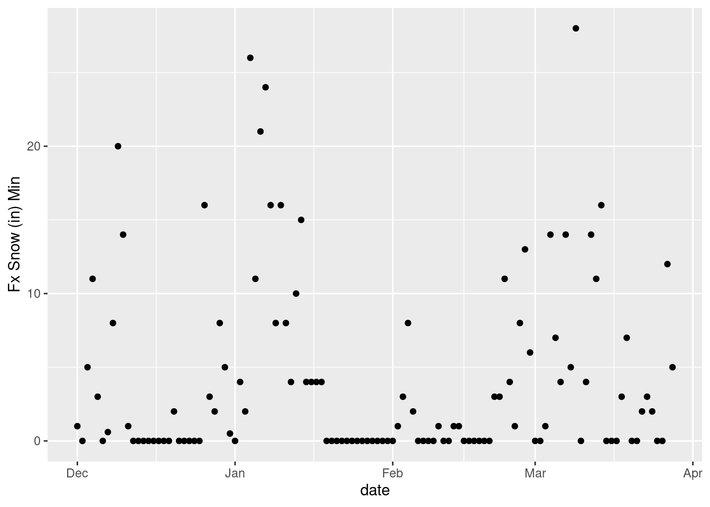
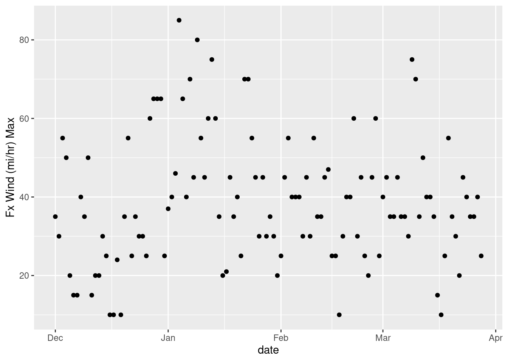

library(rvest)
library(tidyverse)
library(lubridate)Scraping Weather Data
weather
data
scraping
website
meta-data
research
–Avalanche Website Data Scraping
A quick post showing how to extract data from a website and make a few plots. I chose the Mount Shasta Avalanche Center data because I monitor this everyday throughout the season to see how the avalanche forecast changes and how the snowpack is developing.
R vest
There is a great website scraping package that is part of the tidyverse called Rvest. Check out the Documentation.
html <- read_html("https://www.shastaavalanche.org/page/seasonal-weather-history-mount-shasta")
# right click on the page to see the table
html %>%
html_element(".msac-wx-history-table") %>%
html_table()# A tibble: 13 × 2
`Weather History Summary from Oct 1, 2022 to Mar 29, 2023` Weather History …¹
<chr> <dbl>
1 Temp Max (°F) 49
2 Temp Min (°F) 3
3 Temp Avg (°F) 24
4 Wind Max (mi/hr) 68.5
5 Wind Min (mi/hr) 0
6 Wind Avg (mi/hr) 12
7 Wind Gust Max (mi/hr) 110.
8 Total Snowfall (in) 327.
9 Total Accumulated Precipitation (Water Equivalent) (in) 28.4
10 Max Snowfall in 24 Hrs (in) 36.2
11 Snow Depth Max (in) 212.
12 Snow Depth Min (in) 31.9
13 Snow Depth Avg (in) 124
# … with abbreviated variable name
# ¹`Weather History Summary from Oct 1, 2022 to Mar 29, 2023`# Right click on the page and get the xpath to a specific table
xpath <- "/html/body/div[2]/main/div/article/div/table[2]"
weather <- html_nodes(html, xpath = xpath)
html_table(weather)[[1]]
# A tibble: 131 × 21
Observed an…¹ Obser…² Obser…³ Obser…⁴ Obser…⁵ Obser…⁶ Obser…⁷ Obser…⁸ Obser…⁹
<chr> <chr> <chr> <chr> <chr> <chr> <chr> <chr> <chr>
1 "" Ob Tem… Ob Tem… Ob Tem… Ob Win… Ob Win… Ob Win… Ob Win… Ob Win…
2 "Date" Min Max Avg Min Max Avg Gust Dir
3 "2023 03/28" 16.5 23.5 18 5.5 20 9.5 42.93 SSE
4 "2023 03/27" 16.5 23.5 18 5.5 20 11.5 42.93 SSE
5 "2023 03/26" 4 28 15.5 1 10.5 5.5 24.54 SE
6 "2023 03/25" 6.5 22 15 5.5 33.5 16.5 67.47 NW
7 "2023 03/24" 5 24 14.5 4.5 39 22 61.34 NW
8 "2023 03/23" 12.5 29 19.5 8.5 39 20 67.47 WNW
9 "2023 03/22" 19 28.5 23.5 7 11.5 10 30.66 WNW
10 "2023 03/21" 19 28.5 23.5 4.5 37 25.5 67.47 E
# … with 121 more rows, 12 more variables:
# `Observed and Forecast Weather by Day` <chr>,
# `Observed and Forecast Weather by Day` <chr>,
# `Observed and Forecast Weather by Day` <chr>,
# `Observed and Forecast Weather by Day` <chr>,
# `Observed and Forecast Weather by Day` <chr>,
# `Observed and Forecast Weather by Day` <chr>, …# make a data.frame with the table
weather2 <- as.data.frame(html_table(weather, fill=TRUE))
# rename columns
names(weather2) <- paste(weather2[1,], weather2[2,])
names(weather2) [1] " Date" "Ob Temp (°F) Min"
[3] "Ob Temp (°F) Max" "Ob Temp (°F) Avg"
[5] "Ob Wind (mi/hr) Min" "Ob Wind (mi/hr) Max"
[7] "Ob Wind (mi/hr) Avg" "Ob Wind (mi/hr) Gust"
[9] "Ob Wind (mi/hr) Dir" "Ob Snow (in) HS"
[11] "Ob Snow (in) HN24" "Ob Snow (in) SWE"
[13] "Ob Snow (in) Total Snowfall" "Fx Temp (°F) Min"
[15] "Fx Temp (°F) Max" "Fx Wind (mi/hr) Min"
[17] "Fx Wind (mi/hr) Max" "Fx Snow (in) Min"
[19] "Fx Snow (in) Max" "Fx Snow (in) SWE"
[21] "Fx Rating " names(weather2)[1] <- paste("date")
# remove rows that are now column names
weather2 <- weather2[-c(1,2),]
# take a look
glimpse(weather2)Rows: 129
Columns: 21
$ date <chr> "2023 03/28", "2023 03/27", "2023 03/26"…
$ `Ob Temp (°F) Min` <chr> "16.5", "16.5", "4", "6.5", "5", "12.5",…
$ `Ob Temp (°F) Max` <chr> "23.5", "23.5", "28", "22", "24", "29", …
$ `Ob Temp (°F) Avg` <chr> "18", "18", "15.5", "15", "14.5", "19.5"…
$ `Ob Wind (mi/hr) Min` <chr> "5.5", "5.5", "1", "5.5", "4.5", "8.5", …
$ `Ob Wind (mi/hr) Max` <chr> "20", "20", "10.5", "33.5", "39", "39", …
$ `Ob Wind (mi/hr) Avg` <chr> "9.5", "11.5", "5.5", "16.5", "22", "20"…
$ `Ob Wind (mi/hr) Gust` <chr> "42.93", "42.93", "24.54", "67.47", "61.…
$ `Ob Wind (mi/hr) Dir` <chr> "SSE", "SSE", "SE", "NW", "NW", "WNW", "…
$ `Ob Snow (in) HS` <chr> "212.3", "211.1", "188.6", "190.9", "190…
$ `Ob Snow (in) HN24` <chr> "9.5", "18.5", "0", "0.1", "0", "0", "0"…
$ `Ob Snow (in) SWE` <chr> "0", "0", "0.01", "0", "0.05", "0.16", "…
$ `Ob Snow (in) Total Snowfall` <chr> "310.8", "301.3", "282.8", "282.8", "282…
$ `Fx Temp (°F) Min` <chr> "17", "18", "12", "11", "11", "14", "23"…
$ `Fx Temp (°F) Max` <chr> "30", "27", "27", "21", "22", "26", "33"…
$ `Fx Wind (mi/hr) Min` <chr> "15", "30", "25", "25", "30", "25", "10"…
$ `Fx Wind (mi/hr) Max` <chr> "25", "40", "35", "35", "40", "45", "20"…
$ `Fx Snow (in) Min` <chr> "5", "12", "0", "0", "2", "3", "2", "0",…
$ `Fx Snow (in) Max` <chr> "9.5", "18.5", "1.5", "1.5", "5", "7", "…
$ `Fx Snow (in) SWE` <chr> "0.42", "1.01", "0.01", "0.03", "0.05", …
$ `Fx Rating ` <chr> "CON", "MOD", "MOD", "MOD", "LOW", "LOW"…# columns that are numeric should be converted back to such. They were coerced into character vectors because of the first two rows were characters.
weather2 <- weather2 %>%
mutate_at(c(2:8), as.numeric)
weather2 <- weather2 %>%
mutate_at(c(10:20), as.numeric)
# coerce date column
weather2 <- weather2 %>%
mutate_at(1, as_date)
# take a quick look
head(weather2) date Ob Temp (°F) Min Ob Temp (°F) Max Ob Temp (°F) Avg
3 2023-03-28 16.5 23.5 18.0
4 2023-03-27 16.5 23.5 18.0
5 2023-03-26 4.0 28.0 15.5
6 2023-03-25 6.5 22.0 15.0
7 2023-03-24 5.0 24.0 14.5
8 2023-03-23 12.5 29.0 19.5
Ob Wind (mi/hr) Min Ob Wind (mi/hr) Max Ob Wind (mi/hr) Avg
3 5.5 20.0 9.5
4 5.5 20.0 11.5
5 1.0 10.5 5.5
6 5.5 33.5 16.5
7 4.5 39.0 22.0
8 8.5 39.0 20.0
Ob Wind (mi/hr) Gust Ob Wind (mi/hr) Dir Ob Snow (in) HS Ob Snow (in) HN24
3 42.93 SSE 212.3 9.5
4 42.93 SSE 211.1 18.5
5 24.54 SE 188.6 0.0
6 67.47 NW 190.9 0.1
7 61.34 NW 190.7 0.0
8 67.47 WNW 192.9 0.0
Ob Snow (in) SWE Ob Snow (in) Total Snowfall Fx Temp (°F) Min
3 0.00 310.8 17
4 0.00 301.3 18
5 0.01 282.8 12
6 0.00 282.8 11
7 0.05 282.7 11
8 0.16 282.7 14
Fx Temp (°F) Max Fx Wind (mi/hr) Min Fx Wind (mi/hr) Max Fx Snow (in) Min
3 30 15 25 5
4 27 30 40 12
5 27 25 35 0
6 21 25 35 0
7 22 30 40 2
8 26 25 45 3
Fx Snow (in) Max Fx Snow (in) SWE Fx Rating
3 9.5 0.42 CON
4 18.5 1.01 MOD
5 1.5 0.01 MOD
6 1.5 0.03 MOD
7 5.0 0.05 LOW
8 7.0 0.06 LOWglimpse(weather2)Rows: 129
Columns: 21
$ date <date> 2023-03-28, 2023-03-27, 2023-03-26, 202…
$ `Ob Temp (°F) Min` <dbl> 16.5, 16.5, 4.0, 6.5, 5.0, 12.5, 19.0, 1…
$ `Ob Temp (°F) Max` <dbl> 23.5, 23.5, 28.0, 22.0, 24.0, 29.0, 28.5…
$ `Ob Temp (°F) Avg` <dbl> 18.0, 18.0, 15.5, 15.0, 14.5, 19.5, 23.5…
$ `Ob Wind (mi/hr) Min` <dbl> 5.5, 5.5, 1.0, 5.5, 4.5, 8.5, 7.0, 4.5, …
$ `Ob Wind (mi/hr) Max` <dbl> 20.0, 20.0, 10.5, 33.5, 39.0, 39.0, 11.5…
$ `Ob Wind (mi/hr) Avg` <dbl> 9.5, 11.5, 5.5, 16.5, 22.0, 20.0, 10.0, …
$ `Ob Wind (mi/hr) Gust` <dbl> 42.93, 42.93, 24.54, 67.47, 61.34, 67.47…
$ `Ob Wind (mi/hr) Dir` <chr> "SSE", "SSE", "SE", "NW", "NW", "WNW", "…
$ `Ob Snow (in) HS` <dbl> 212.3, 211.1, 188.6, 190.9, 190.7, 192.9…
$ `Ob Snow (in) HN24` <dbl> 9.5, 18.5, 0.0, 0.1, 0.0, 0.0, 0.0, 0.0,…
$ `Ob Snow (in) SWE` <dbl> 0.00, 0.00, 0.01, 0.00, 0.05, 0.16, 0.00…
$ `Ob Snow (in) Total Snowfall` <dbl> 310.8, 301.3, 282.8, 282.8, 282.7, 282.7…
$ `Fx Temp (°F) Min` <dbl> 17, 18, 12, 11, 11, 14, 23, 22, 18, 23, …
$ `Fx Temp (°F) Max` <dbl> 30, 27, 27, 21, 22, 26, 33, 36, 30, 32, …
$ `Fx Wind (mi/hr) Min` <dbl> 15, 30, 25, 25, 30, 25, 10, 20, 25, 45, …
$ `Fx Wind (mi/hr) Max` <dbl> 25, 40, 35, 35, 40, 45, 20, 30, 35, 55, …
$ `Fx Snow (in) Min` <dbl> 5, 12, 0, 0, 2, 3, 2, 0, 0, 7, 3, 0, 0, …
$ `Fx Snow (in) Max` <dbl> 9.5, 18.5, 1.5, 1.5, 5.0, 7.0, 4.0, 3.0,…
$ `Fx Snow (in) SWE` <dbl> 0.42, 1.01, 0.01, 0.03, 0.05, 0.06, 0.25…
$ `Fx Rating ` <chr> "CON", "MOD", "MOD", "MOD", "LOW", "LOW"…# Quick few plots to make sure everything looks reasonable
weather_plot <- ggplot(weather2, aes(x=date, y=`Fx Snow (in) Min`)) +
geom_point()
weather_plot
weather_plot2 <- ggplot(weather2, aes(x=date, y=`Fx Wind (mi/hr) Max`)) +
geom_point()
weather_plot2
ggsave("~/DATA/images/weather-scraping-plot.png")Up next: Making sure the data is cleaned up after the scrape and coercion.